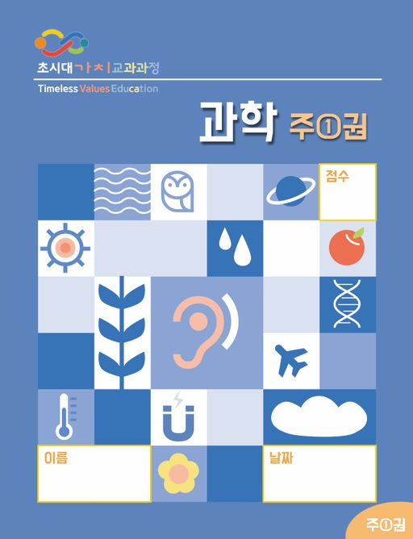
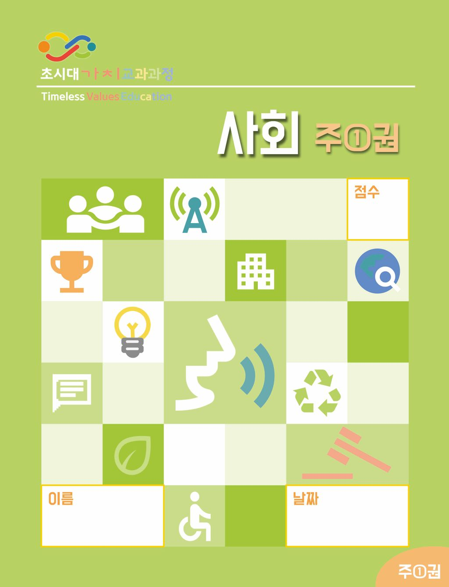

시대를 지나도 변하지 않는 가치,
부모와 자녀를 잇는 교육
부모와 교육자, 기독교 교육기관과 홈스쿨링 가정이 직면한 변화 속에서도
아이의 인성과 기독교적 세계관을 견고하게 세웁니다.
왜 지금, 가치 교육인가?
기술은 빠르게 바뀌지만 아이를 세우는 기준은 더 분명해야 합니다.
초시대 가치 교육은 성경적 가치를 오늘의 교육 언어로 다시 구성합니다.
성경적 가치 기반
진리, 사랑, 정의, 가족, 공동체와 같은
변하지 않는 가치를 교육의 중심에 둡니다.
오늘의 교과과정과 연결
전통적 가치를 오늘의 학습 맥락 안에서
아이들이 이해할 수 있는 언어로 풀어냅니다.
가정과 학교를 잇는 교육
부모와 자녀, 교사와 학생이 함께 배우며
삶으로 이어지는 교육을 지향합니다.
한국어 기반 전과목
기독교 교과과정
단순히 지식을 전달하는 것을 넘어, 세상의 모든 학문을 성경적 시선에서 통합적으로 바라보는 눈을 길러줍니다.
초등 전 학년(6년)을 아우르는 체계적인 학술 로드맵
한국의 교육 환경과 언어적 맥락에 최적화된 콘텐츠
한국어 기반 교육
번역 투가 아닌, 우리 아이들의 정서와 언어에 맞는 자연스러운 교육 언어를 사용합니다.
전과목 확장성
국어, 수학, 사회, 과학 등 모든 주요 교과목에 기독교적 가치를 유기적으로 연결했습니다.
다양한 교육 현장
기독교 학교, 대안 교육, 홈스쿨링 등 어떤 환경에서도 즉시 도입 가능한 유연함을 갖췄습니다.
교재 미리보기
아이들의 시선을 사로잡는 세련된 디자인과
깊이 있는 가치를 담은 실제 교재의 구성을 확인해보세요.

과학 - 창조의 질서
세상의 모든 조화 속에 숨겨진 원리와 창조의 질서를 발견하며 지적 호기심을 일깨웁니다.

사회 - 공동체의 가치
함께 살아가는 세상 속에서 그리스도인의 책임과 이웃을 향한 사랑의 가치를 구체적으로 배웁니다.
교육을 향한 우리의 진심
시대를 지나도 변하지 않는 가치를 다음 세대에게 전하기 위해,
우리는 아이들의 눈높이에서 고민하고 연구합니다.
성경적 가치의 현대적 해석
뿌리 깊은 성경적 가치를 디지털 시대를 살아가는 아이들이 공감할 수 있는 오늘날의 언어로 세심하게 번역했습니다.
6년의 체계적인 연구
단순한 지식 전달을 넘어, 아이들의 인격적 성숙과 정체성 형성을 돕기 위해 6년 과정의 정교한 커리큘럼을 설계했습니다.
감각적인 시각 언어
아름다움 또한 교육의 일부입니다. 아이들이 책을 펼칠 때마다 영감을 얻을 수 있도록 감각적인 디자인과 일러스트를 담았습니다.
6년의 성취, 견고한 여정
초등 1학년부터 6학년까지, 매년 다른 테마와 깊이로
아이들의 가치관을 단계적으로 세워 나갑니다.
발견의 시작
하나님이 만드신 아름다운 세상과 나를 발견하는 시간
관계의 확장
이웃과 사회 속에서 그리스도인으로 살아가는 태도 습득
성숙의 도약
비판적 사고를 통해 세상의 문화를 분별하고 주도하는 힘
자주 묻는 질문
교육과정 도입과 활용에 대해 자주 궁금해하시는 내용들을 정리했습니다.
시대를 넘는 가치 교육,
함께 시작해보세요.
초시대 가치 교육과정 도입, 교재 구매 문의 등
궁금하신 점을 남겨주시면 정성껏 답변해 드리겠습니다.